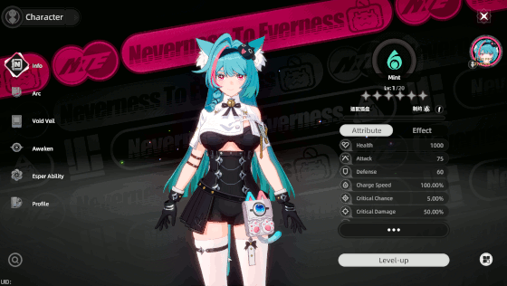

| Home | Blog | Games | Links | Music |
2024 was definitively the year where many free to play chinese games were announced.
The likes of Zenless Zone Zero for instance, which became an instant hit. Or other more obscure games like Strinova which i covered.
But there were also other games like Project Mugen which became Ananta, Fate Trigger and finally Neverness to Everness.
Neverness to Everness was in development for quite some time and only a few people were able to look at it due to how early it still is.
It's supposed to be some kind of anime open world game like GTA with cute anime girls.
An earlier offline dev build of the game was leaked by a few people and it's thanks to this build that i can finally attest myself whenever or not it holds promise.
The game is made in Unreal Engine 5 and makes extensive use of Lumen. Although lumen can be disabled, it does come at a visual cost.
The titlescreen is nice but there isn't nothing, in fact you cannot start the game until you run a command in this dev build.
Once you do that, you are teleported to an open world and the initial impressions aren't bad.
The city is very colorful and lively with tons of NPCs roaming around. That said, you cannot do much with them.
The game also has weather support, featuring rain as shown in the screenie above. Sometimes it's sunny, sometimes it's night.
This devbuild allows me to change my character team and add new members so that's what i did during a livestream and added Mint.
It seems that the developers intend us to be able to ride the bus, drive cars around, accept quests in the open world.
However most of these features aren't working properly in this early devbuild.
You can also attack, do a special attack and jump : there doesn't seem to be much more to it.

I do enjoy the artstyle and visuals but besides Mint, i'm not a huge fan of the character designs of the other characters which are meh at best.
It should be mentionned that the game runs extremely poor on Ultra settings at 4K. There is also no option to separately set the window fullscreen or not, which is strange.
It's very clear to me that performance was not a concern for this build and another user told me it ran bad even on an RTX 4090.
There's a menu that you can interact with, along with experience points.
This does seem to indicate the game is heading toward being a gacha game, possibly like
Wuthering Waves with special characters needing to be pulled with real life money.
I think this devbuild really shows how challenging it is to make a good open world game : there isn't much to it besides roaming around.
There are other maps as well but they are even less functional than the main one is. It will appear that this game will not be ready for shipping until late 2025.
Which is a shame.